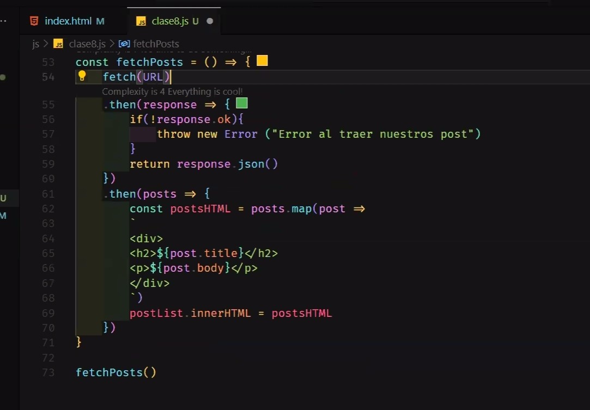
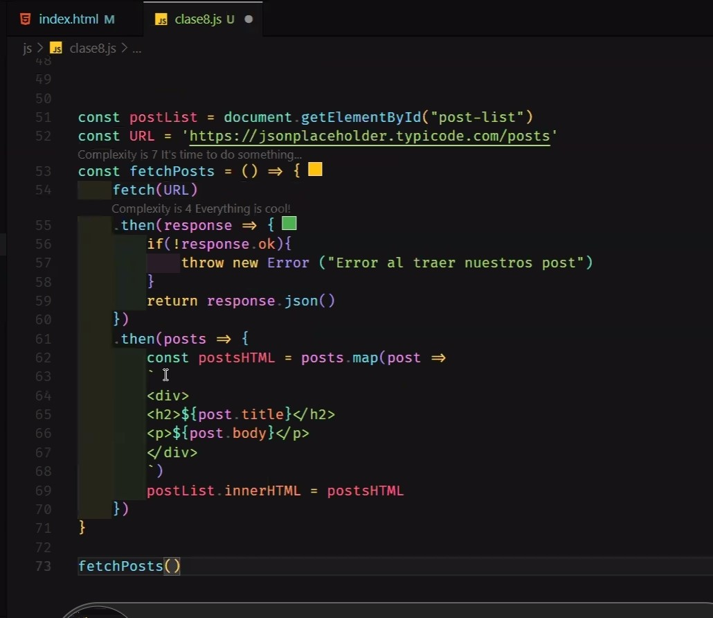
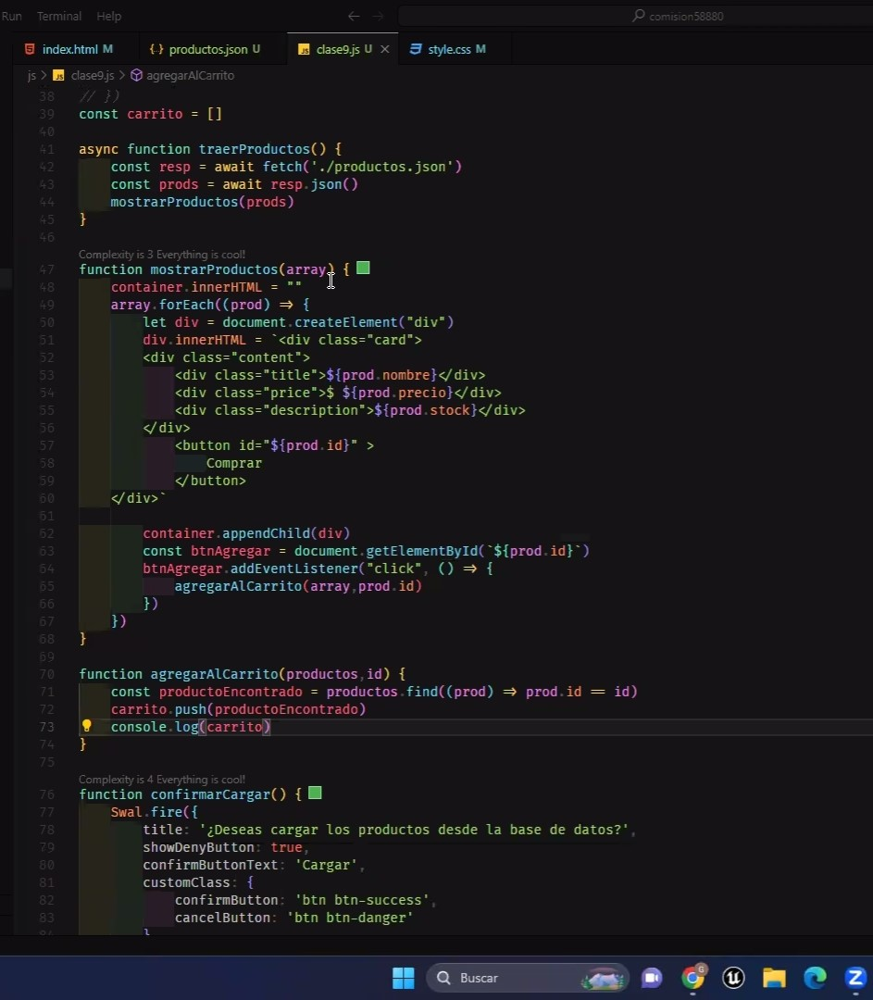
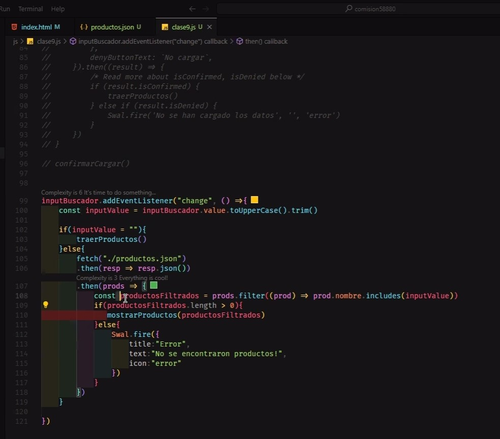
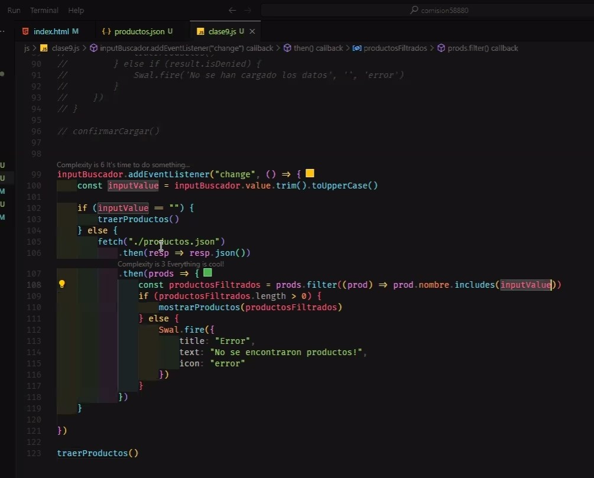
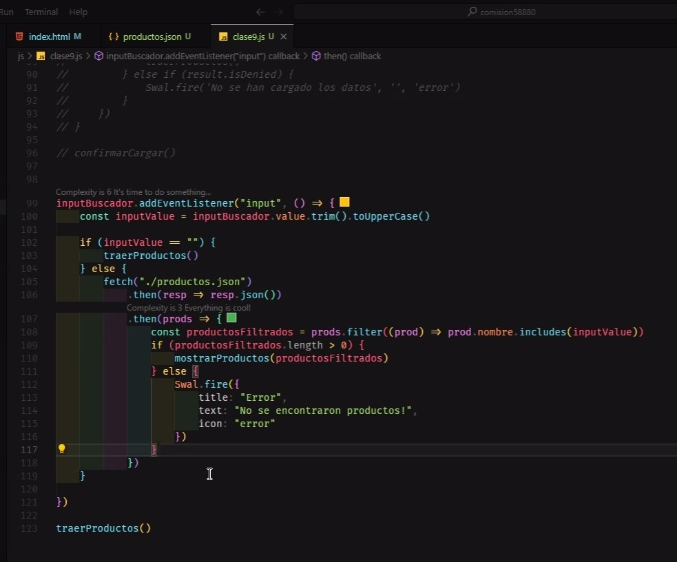

Git y Git-Hub
Con este comando en la consola indicamos el nombre de usuario que configuramos en la computadora.
Con este comando configuramos el email del usuario dentro de la consola para la la computadora que estemos utilizando.
Con estos dos comandos podemos ver el usuario y el email que tenemos configurado en la computadora. Si no responde alguno de los dos significa que todavia no hemos hecho el paso anterior de configurar el email o el nombre de usuario.
Con el comando git help podemos ver en la consola los diferentes comandos para utilizar. Con git init iniciamos un repositorio en la carpeta en donde nos encontramos. Este es el primer paso antes de usar git add . y git commit. Con el comando cls limpiamos la consola.
Con el comando git add . juntamos todos los archivos y los ponemos dentro de una caja para luego ser commiteados.
Con git status -s podremos ver en la consola todos los archivos que tenemos dentro de esa caja, la misma que hicimos utilizando git add .
Con git commit -m "mensaje" creamos una version de nuestro codigo, que se guardara con el mensaje que escribamos dentro de las comillas.
Despues que creamos el repositorio en la pagina de Git-Hub, podremos ver en ese mismo lugar los comandos para hacer el link con nuestro repositorio remoto.
Con git push origin main, si es que nuestra rama principal se llama main, subimos los archivos de nuestra pc al repositorio en Git-Hub.
Con git remote add... estamos diciendole a la terminal que vamos a subir un repositorio local a el link que nos brinda Git-Hub.
Con git branch -M main nosotros modificamos el nombre de la rama principal, cambiandola de master a main.
Con el comando git clone mas el link de la pagina de nuestro repositorio en Git-Hub podremos clonar el repositorio en la carpeta seleccionada.
Con git branch -M main nosotros modificamos el nombre de la rama principal, cambiandola de master a main.
HTML y CSS
flex-start / flex-end / center / space-around / space-between / space-evenly
stretch (valor por defecto) / flex-start / flex-end / center
(En el elemento que pertenece al contenedor). flex-start / flex-end / center / stretch.
Con el comando git help podemos ver en la consola los diferentes comandos para utilizar. Con git init iniciamos un repositorio en la carpeta en donde nos encontramos. Este es el primer paso antes de usar git add . y git commit. Con el comando cls limpiamos la consola.
Con el comando git add . juntamos todos los archivos y los ponemos dentro de una caja para luego ser commiteados.
Con git status -s podremos ver en la consola todos los archivos que tenemos dentro de esa caja, la misma que hicimos utilizando git add .
Con git commit -m "mensaje" creamos una version de nuestro codigo, que se guardara con el mensaje que escribamos dentro de las comillas.
Despues que creamos el repositorio en la pagina de Git-Hub, podremos ver en ese mismo lugar los comandos para hacer el link con nuestro repositorio remoto.
Con git push origin main, si es que nuestra rama principal se llama main, subimos los archivos de nuestra pc al repositorio en Git-Hub.
Con git remote add... estamos diciendole a la terminal que vamos a subir un repositorio local a el link que nos brinda Git-Hub.
Con git branch -M main nosotros modificamos el nombre de la rama principal, cambiandola de master a main.
Con el comando git clone mas el link de la pagina de nuestro repositorio en Git-Hub podremos clonar el repositorio en la carpeta seleccionada.
Con git branch -M main nosotros modificamos el nombre de la rama principal, cambiandola de master a main.
Javascript
Math.pow: Este metodo nos permite potenciar un numero. El primer numero sera la base y el segundo la potencia. Ej: Math.pow(2,3) = 8.
Math.round: Redondea el numero decimal al entero mas proximo.
Math.floor: Redondea el numero decimal al entero de menor valor.
Math.ceil: Redondea el numero decimal al entero siguiente.
Math.min y Math.max: Esos dos metodos nos permiter conocer el numero menor y mayor de un conjunto de numeros.
Math.random: Este ultimo metodo nos permitira generar un numero decimal entre el 0 y el 1.
.push(): Añade uno o mas elemento al final de un arreglo.
.unshift(): Añade uno o mas elemento al comienzo de un arreglo.
.pop(): Elimina y devuelve el ultimo elemento de un arreglo.
.shift(): Elimina y devuelve el primer elemento de un arreglo.
.includes(): Determina si un arreglo incluye o contiene un elemento especifico. Devuelve true o false en cada caso.
.every(): Determina si todos los elementos de un arreglo satisfacen una misma condicion.
.split(): Convierte un string en un arreglo, donde cada elemeto contendra un sub-string, dependiendo del parametro divisor que indiquemos.
.join(): Convierte un arreglo en un string, uniendo todos los elementos de este en una cadena. Podemos indicarle dentro del parentesis con comillas el divisor.
.forEach(): Nos permite recorrer un arreglo, realizando una accion en cada caso.
.map(): Tambien nos permite recorrer un arreglo y realizar una accion por cada elemento. La diferencia que este metodo devuelve un nuevo arreglo los elementos modificados.
Traer con fetch un array
 Agregar productos a un carrito
Siguientes tres imagenes creamos un buscador que recorre un array
  